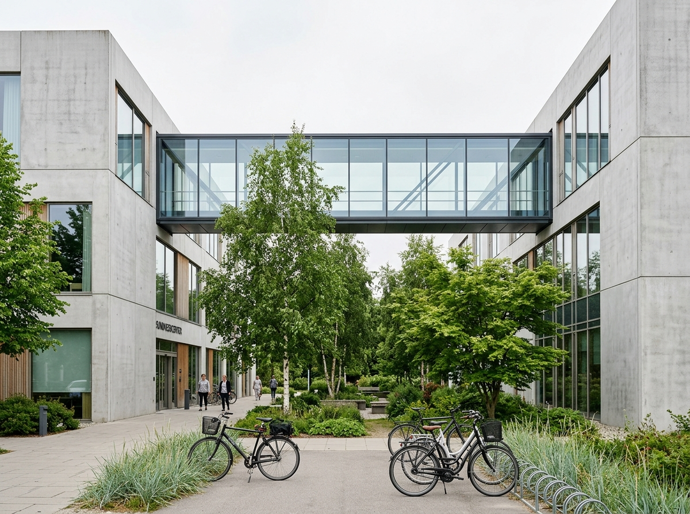
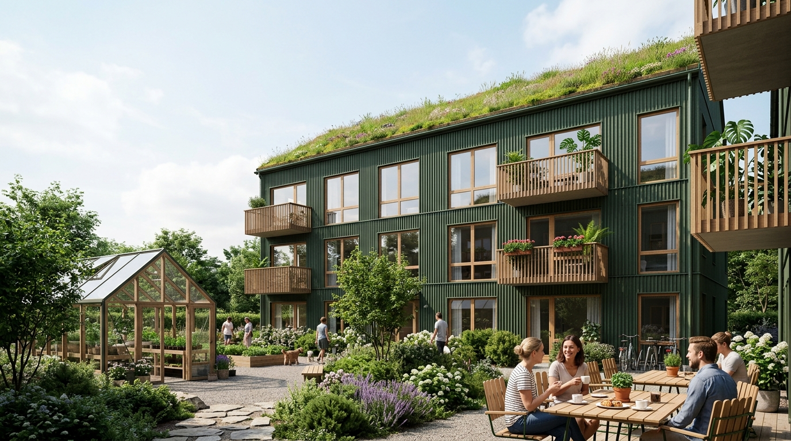
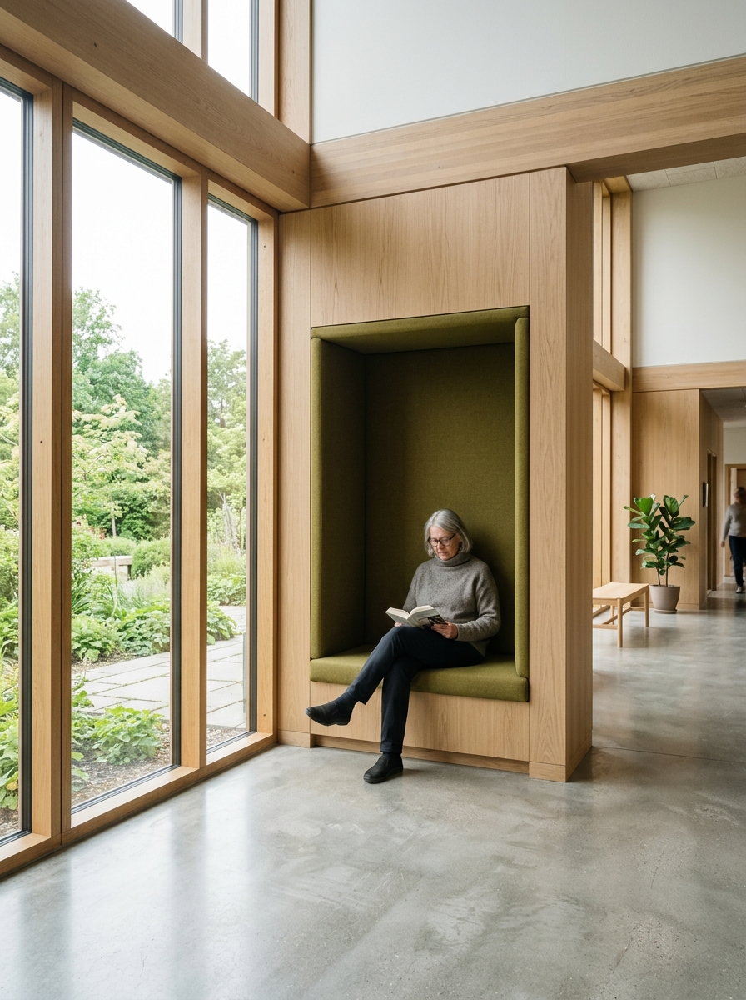
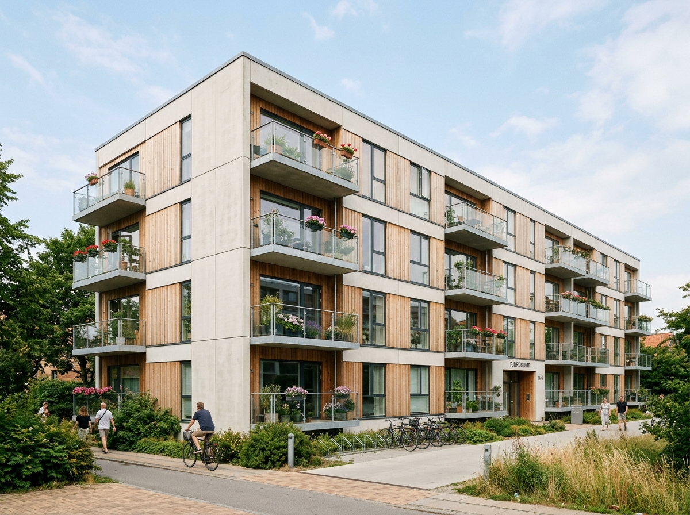
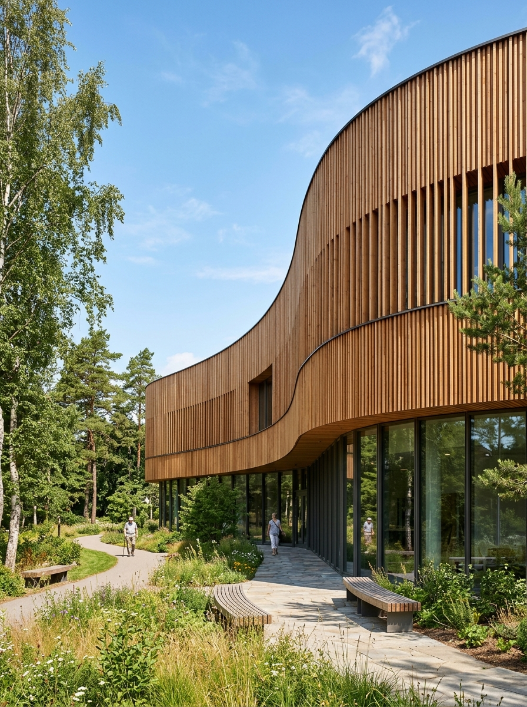
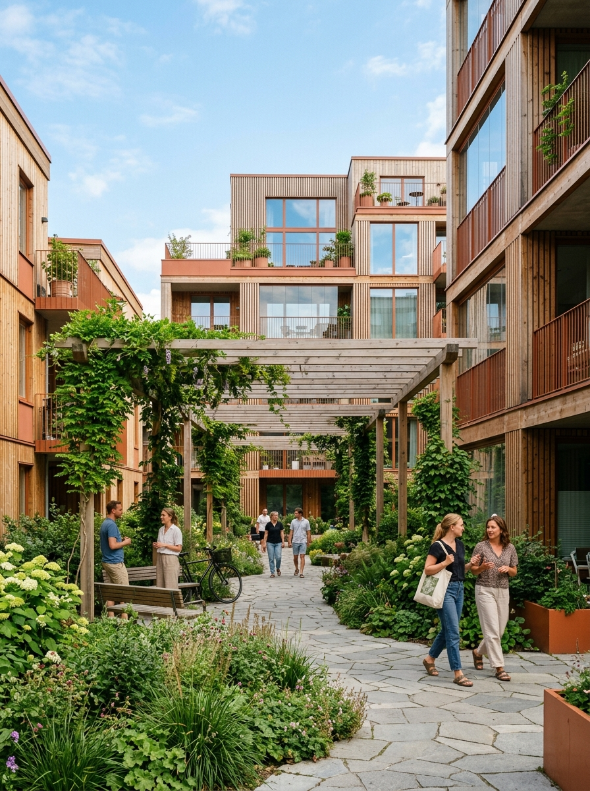
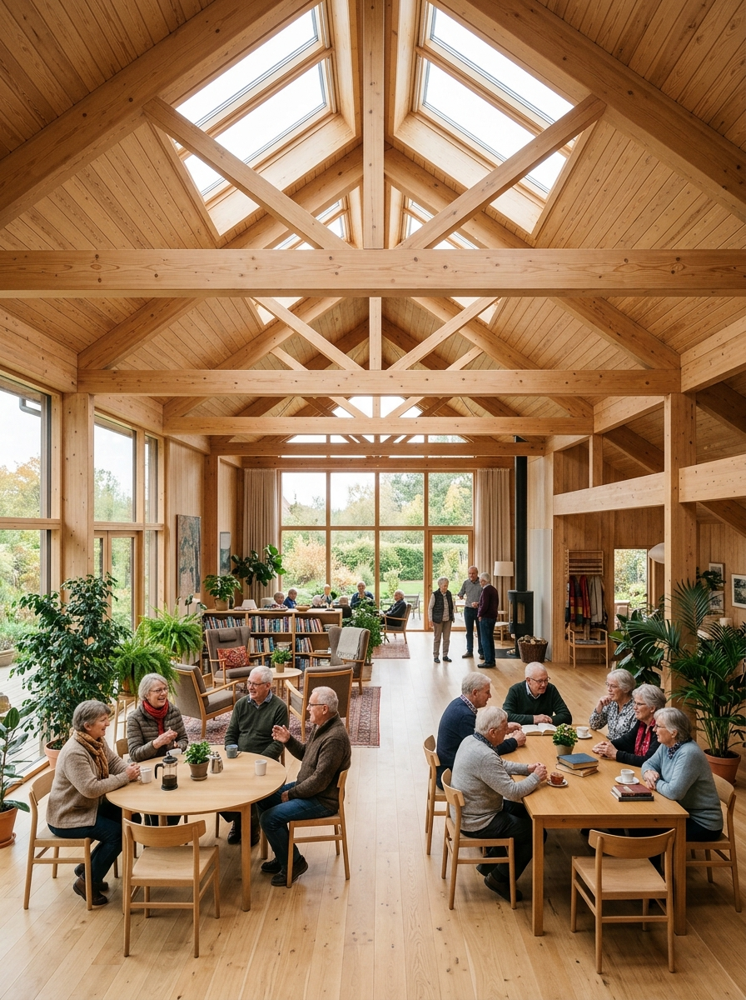
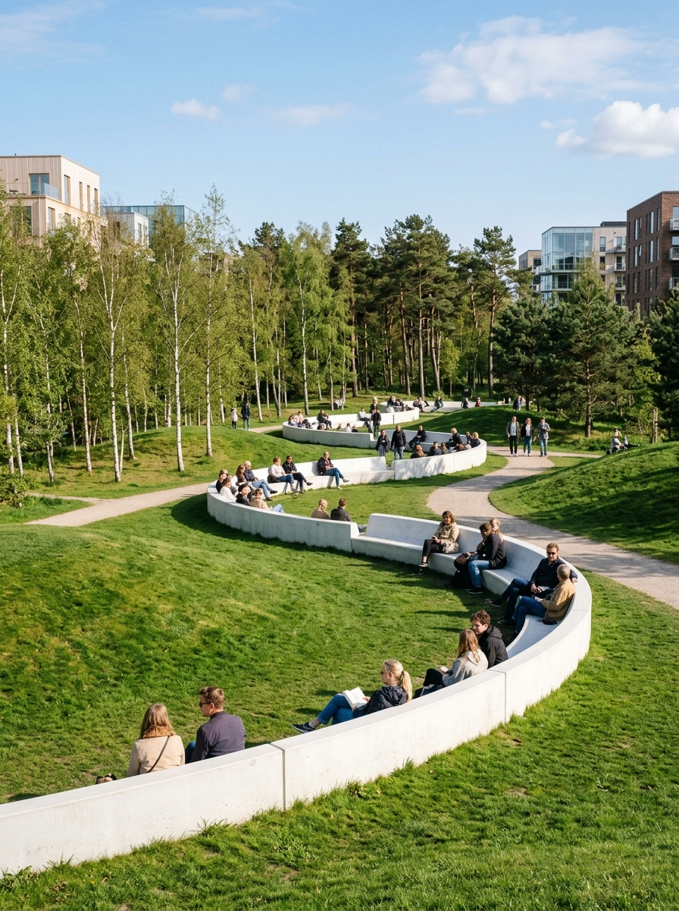

Healthcare
Centre Hillerød

Visit Project ↗
Nodes Studio creates architecture for people with focus on daylight, natural materials, and social spaces. Where vision meets design.
Being an architect is not just about designing a building or a facility; it is also about creating an environment that meets the functional and emotional needs of people who will live and work there.

Visit Project ↗
NODES STUDIO
"Because great architecture is not just about building; it's about people and their stories."


Energy renovation of buildings from the '70s provides possibilities for modern living, improved social identity.
A holistic methodology and responsible practice with parametric environmental simulation, solar optimization, and circular materials.
Algorithmic exploration of responsive building envelopes, passive climate performance, and geometrically optimized timber structures.
Context-driven masterplanning and public realm design that harmonizes natural water systems, urban microclimates, and vibrant community life.
All our housing, institutional and commercial spaces are developed in dialogue with nature, prioritizing circular timber, low-carbon materials, and spaces that promote community well-being and biodiversity.




"A condition of our architecture is rooted in a deep understanding of how users create memories and interact within all elements: the space, sunlight and textures."